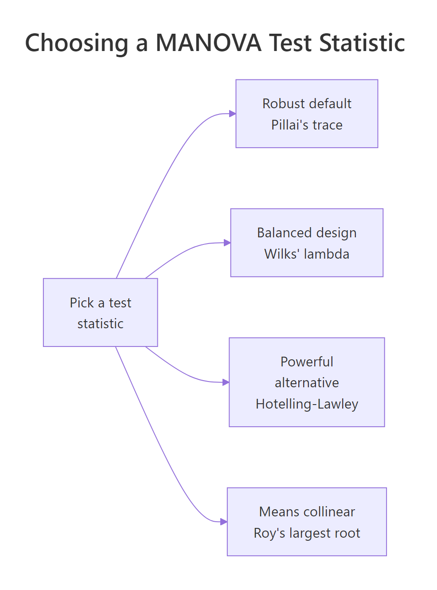
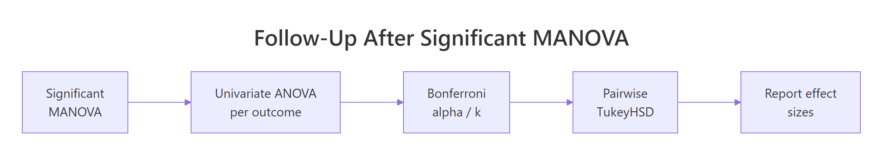
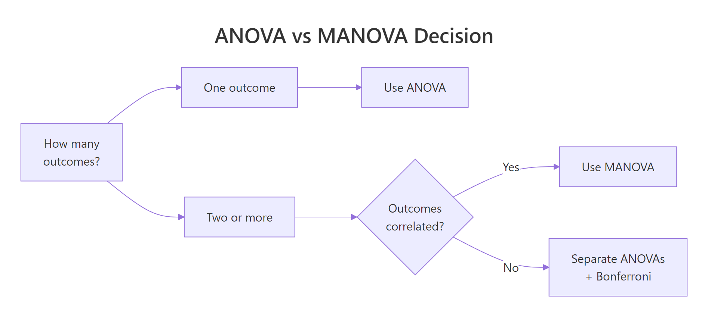

MANOVA in R: Test Multiple Outcomes Simultaneously Without Inflating Type I Error
MANOVA (Multivariate Analysis of Variance) tests whether group means differ across two or more correlated outcomes at the same time, instead of running a separate ANOVA per outcome. R's built-in manova() does it in one line. Combining outcomes into a single test controls Type I error and uncovers group differences that any single ANOVA might miss.
Why use MANOVA instead of multiple ANOVAs?
Picture three iris species and four petal-and-sepal measurements. You could fit four separate ANOVAs, but each one carries its own 5% false-positive risk. Together they balloon the family-wise error rate to roughly 19%. Worse, four solo ANOVAs ignore the correlations between the outcomes. One MANOVA solves both problems. Here is the payoff in three lines of base R.
Pillai's trace is 1.19, close to its theoretical maximum of k = 2 (one less than the number of groups). The approximate F is huge and the p-value is effectively zero. Translation: the three species differ on the joint pattern of all four measurements, with overwhelming evidence.
Why bother with the multivariate version? Run four ANOVAs at the standard 5% level and the chance that at least one of them gives a false positive is $1 - (1 - 0.05)^4 \approx 0.185$. That is nearly four times the nominal rate. MANOVA condenses the four tests into one, so the 5% rate stays at 5%.
Try it: Fit a smaller MANOVA on iris using just Sepal.Length and Petal.Length. Store it in ex_2dv and print the Pillai summary.
Click to reveal solution
Explanation: Trim the cbind() to two columns. Pillai drops from 1.19 to 0.95, but with two outcomes its theoretical max is also lower (1.0 here), and the test is still highly significant.
How do you run MANOVA in R with manova()?
The manova() call has the same shape as aov(). The difference lives on the left side of the formula: instead of one outcome, you bind several with cbind(). The right side is your grouping factor.
Here is what each column means:
- Df, degrees of freedom for the effect (groups − 1).
- Pillai, the multivariate test statistic (R prints this one by default).
- approx F, an F approximation of the statistic. MANOVA statistics do not have exact F distributions in general, so R reports an approximation that is accurate enough for inference.
- num Df / den Df, the numerator and denominator degrees of freedom for that approximation.
- Pr(>F), the p-value.
manova() is a thin wrapper around aov() with a multivariate response. Anything you know about aov() (formulas, contrasts, factor coercion) carries over. Missing rows are dropped listwise by default; use na.omit() first if you want to be explicit.Try it: Re-run summary() on iris_manova but ask for Wilks' lambda instead of Pillai.
Click to reveal solution
Explanation: Pass test = "Wilks" to summary(). Wilks' lambda is 0.023, which means roughly 2.3% of the variance in the outcome bundle is not explained by Species, so 97.7% is. Different statistic, same conclusion.
Which test statistic should you choose: Pillai, Wilks, Hotelling-Lawley, or Roy?
R's summary() prints whichever of four classical statistics you ask for. They all compress the same two matrices into a single number: the hypothesis matrix H (variation explained by the grouping factor) and the error matrix E (variation within groups). They differ in how they compress.
| Statistic | Formula intuition | When to prefer |
|---|---|---|
| Pillai's trace | Sum of variance explained as a fraction of total | Default. Most robust to violated assumptions and unbalanced designs. |
| Wilks' lambda | Determinant ratio, like a multivariate $1 - R^2$ | Most familiar in textbooks. Works well in balanced designs with met assumptions. |
| Hotelling-Lawley trace | Sum of eigenvalues of $H E^{-1}$ | Slightly more powerful than Pillai when assumptions hold. |
| Roy's largest root | Largest eigenvalue of $H E^{-1}$ | Most powerful when group means are collinear. Inflates Type I error otherwise. |
Print all four side by side to see them agree on iris.
The four statistics line up because the iris-versus-species effect is enormous. In real data the four can disagree at the margin, especially Roy. If three of them say significant and Roy says wildly significant, trust the others.
If you enjoy formulas, two of the cleanest definitions are:
$$\Lambda = \frac{|E|}{|H + E|} \quad\text{(Wilks)} \qquad V = \mathrm{tr}\bigl(H(H + E)^{-1}\bigr) \quad\text{(Pillai)}$$
Where:
- $H$ is the between-groups sum-of-squares-and-cross-products matrix.
- $E$ is the within-groups (error) matrix.
- $|\cdot|$ denotes the determinant.
- $\mathrm{tr}(\cdot)$ denotes the matrix trace.
If the math is not your priority, skip to the next section. The decision rules above are all you need to pick a statistic.

Figure 2: Picking among Pillai, Wilks, Hotelling-Lawley, and Roy.
Try it: Compute and compare Pillai and Roy on iris_manova. Note the F values.
Click to reveal solution
Explanation: Roy's F is roughly 22 times larger because Roy uses only the largest eigenvalue of $H E^{-1}$. Same conclusion either way, but if Roy ever stands out alone, prefer Pillai.
What assumptions does MANOVA require, and how do you check them?
MANOVA inherits ANOVA's assumptions, then adds a few because it works on a vector of outcomes. The seven things to verify:
- Independence of observations, design issue, not a statistical test.
- Sample size per group > number of outcomes, otherwise covariance matrices are singular.
- No severe multivariate outliers, checked with Mahalanobis distance.
- Multivariate normality of residuals, usually checked per outcome with Shapiro-Wilk plus QQ plots.
- Equal covariance matrices across groups (homogeneity of variance-covariance), Box's M test.
- No extreme multicollinearity among outcomes, drop or merge near-duplicate DVs.
- Linear relationships between outcomes, scatterplot matrix per group.
Start with multicollinearity, because it is the easiest to break and the most damaging.
Petal.Length and Petal.Width correlate at 0.96, which is in the danger zone (above 0.90 is the usual cut-off). In a real analysis you would drop one or replace both with their average. We keep both here because it does not hurt the demonstration, but be aware that two near-duplicate columns waste a degree of freedom.
Now look for multivariate outliers. Mahalanobis distance is the multivariate cousin of a z-score: it measures how far each row sits from the mean of its group, accounting for the covariance structure.
Compare these to the chi-square critical value with k = 4 degrees of freedom: $\chi^2_{0.001, 4} \approx 18.47$. None of the top distances exceed it, so no single iris flower is wildly atypical. If you saw a value of 25 or 40, you would investigate that row before trusting the model.
Last quick check: per-outcome residual normality.
Petal.Width residuals fail Shapiro at the 5% level. With balanced designs and n = 50 per group, MANOVA tolerates mild non-normality, so this is a yellow flag, not a red one.
Try it: Compute the correlation matrix of mtcars columns mpg, hp, and wt. Save it to ex_cor and round to 2 decimals.
Click to reveal solution
Explanation: cor() returns a symmetric matrix. Subset the columns first, then round for readability. None of the pairs cross the 0.90 multicollinearity threshold.
How do you follow up a significant MANOVA?
A significant Pillai answers "yes, groups differ on the joint outcome bundle." It does not say which outcomes drive the difference, and it does not say which groups differ. Two follow-up steps close the loop.
The first step is summary.aov(), which prints a univariate ANOVA per outcome from the same model object. No re-fitting needed.
All four outcomes are significant on their own, but the F values rank them: Petal.Length (F = 1180) and Petal.Width (F = 960) drive the species difference far more than the sepal measurements. With four follow-up tests, apply a Bonferroni correction: divide your alpha by k. At $\alpha = 0.05$ and k = 4, the per-test threshold becomes 0.0125. All four still pass.
Second step: pairwise comparisons within the strongest outcome. TukeyHSD() controls the family-wise error rate across the three species pairs.
All three pairwise differences in Petal.Length are significant. The largest gap (4.09 cm) sits between setosa and virginica, the smallest (1.29 cm) between versicolor and virginica. That gives you the full story: species differ jointly, the petal measurements drive most of it, and every species pair is distinguishable.

Figure 3: Follow-up workflow after a significant multivariate F test.
effectsize and emmeans packages offer richer post-hoc tools, but they are not available in this in-browser session. The base-R recipes above run anywhere. For partial eta squared by hand: $\eta^2_p = \mathrm{SS}_\mathrm{effect} / (\mathrm{SS}_\mathrm{effect} + \mathrm{SS}_\mathrm{error})$, computed from each row of summary.aov() output.Try it: Look back at the summary.aov(iris_manova) output. Which outcome has the largest F value for Species, and roughly what is its F?
Click to reveal solution
Petal.Length has the largest F at 1180.2. Petal.Width is second at 960. The two sepal measurements lag well behind. In a write-up you would highlight petal length as the dominant driver of the species difference.
How do you run a two-way MANOVA with interactions?
Real designs often have two factors. The same manova() call handles them, you just put both factors on the right side joined with * for an interaction.
Read it row by row. The main effect of cyl is hugely significant: cylinder count moves the (mpg, hp) joint outcome. The main effect of am (transmission) is also significant. The interaction row is significant at the 5% level too, which means the effect of transmission on the (mpg, hp) bundle depends on cylinder count. In other words, the gap between automatic and manual cars is not the same in 4-cylinder, 6-cylinder, and 8-cylinder cars.
car::Manova() in a local R session. The car package is not available in the in-browser sandbox.Try it: Re-fit the same two-way MANOVA but with only main effects (no interaction). Save it to ex_main.
Click to reveal solution
Explanation: Replace * with + to drop the interaction. The two main effects keep the same Pillai values but get more denominator degrees of freedom (28 vs 26 residuals), which slightly tightens the p-values.
Practice Exercises
Exercise 1: MANOVA on airquality
Use the built-in airquality data. Treat Month as the grouping factor. Use cbind(Ozone, Solar.R, Wind, Temp) as the joint outcome. The dataset has missing values, so drop incomplete rows first with na.omit(). Fit MANOVA, request Wilks' lambda, then call summary.aov() and identify the outcome with the largest F. Save the model as aq_manova.
Click to reveal solution
Explanation: Temp has the largest F (41), so monthly temperature differences drive most of the joint effect. Solar.R is the only outcome that is not individually significant after Bonferroni at $0.05/4 = 0.0125$.
Exercise 2: Compare all four statistics in one tidy table
Build a single data frame called stat_table with one row per test statistic (Pillai, Wilks, Hotelling-Lawley, Roy), holding the statistic value, the approximate F, and the p-value for the Species effect of iris_manova. Use summary() with each test = option and pull the numbers out of the returned object.
Click to reveal solution
Explanation: summary(...)$stats is a numeric matrix; column 2 is always the statistic value regardless of which one you asked for. All four agree that Species matters, but Roy's F dwarfs the others, a reminder that Roy is the most aggressive of the four.
Complete Example
Putting the full workflow on iris end to end:
Plain-English conclusion: the three iris species differ jointly on the four floral measurements (Pillai = 1.19, F(8, 290) = 53.5, p < 0.001). Petal length and petal width drive most of the difference, and every species pair is distinguishable on petal length, with the virginica-setosa gap the largest. That sentence is exactly the kind of write-up a journal expects.
Summary

Figure 1: Decision flow for choosing between ANOVA, multiple ANOVAs with Bonferroni, and MANOVA.
| Idea | Takeaway |
|---|---|
| Why MANOVA | Tests k correlated outcomes in one shot; controls family-wise Type I error. |
| Syntax | manova(cbind(y1, y2, ...) ~ x, data = df) |
| Default statistic | Pillai's trace, printed by summary(). |
| Robust default | Pillai is best when assumptions wobble or the design is unbalanced. |
| Risky statistic | Roy's largest root over-rejects unless group means are collinear. |
| Assumption to fear most | Multicollinearity among outcomes (cor > 0.9). |
| First follow-up | summary.aov() for univariate ANOVA per outcome, with Bonferroni alpha = 0.05/k. |
| Second follow-up | TukeyHSD() on the strongest outcome for pairwise contrasts. |
| Two-way design | Same call, just factor1 * factor2 on the right of ~. |
References
- Wilks, S. S. (1932). Certain generalizations in the analysis of variance. Biometrika, 24(3-4), 471-494.
- Bartlett, M. S. (1939). A note on tests of significance in multivariate analysis. Mathematical Proceedings of the Cambridge Philosophical Society, 35(2), 180-185.
- R Core Team. ?manova and ?summary.manova in base R. Link
- Fox, J., & Weisberg, S. (2019). An R Companion to Applied Regression, 3rd ed. Sage. (Chapter on multivariate linear models and
car::Manova().) - Tabachnick, B. G., & Fidell, L. S. (2019). Using Multivariate Statistics, 7th ed. Pearson. Chapter 7 on MANOVA.
- Hand, D. J., & Taylor, C. C. (1987). Multivariate Analysis of Variance and Repeated Measures. Chapman & Hall.
- Penn State STAT 505. Lesson 8.3: Test Statistics for MANOVA. Link
- STHDA. MANOVA Test in R: Multivariate Analysis of Variance. Link
Continue Learning
- One-Way ANOVA in R, the single-outcome version that MANOVA generalises. Read this first if the F-table feels unfamiliar.
- Two-Way ANOVA in R, what the two-factor case looks like with a single outcome. Useful contrast for the two-way MANOVA section above.
- Post-Hoc Tests After ANOVA, deeper coverage of
TukeyHSD(), Bonferroni, and pairwise contrasts you will use aftersummary.aov().